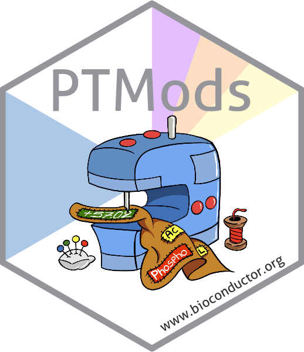

A package to managing post-translational modifications in R.
The reference manual is a good way to get started with the package.
Suggested packages
We highly suggest combining PTMods with PSMatch and Spectra for a more complete approach to analysing mass spectrometry data in R.
Installation instructions
To install the package from Bioconductor, make sure you have the BiocManager package, available from CRAN, and then run
BiocManager::install("PTMods")Contributions
Contributions are welcome, and should ideally be provided through a Github pull request. Feel free to discuss any more non-trivial suggestions or changes first in an issue. See also the main R for Mass Spectrometry contribution guide and code of conduct
License
The PTMods code is provided under a GPL-3 license. The documentation, including the manual pages and the vignettes, are distributed under a CC BY-SA license.
Credit
Code in this package is focused on the use of UniMod data and the ProForma standard Proteoform and Peptidoform Notation formats with the goal to integrate them within the R for Mass Spectrometry infrastructure.